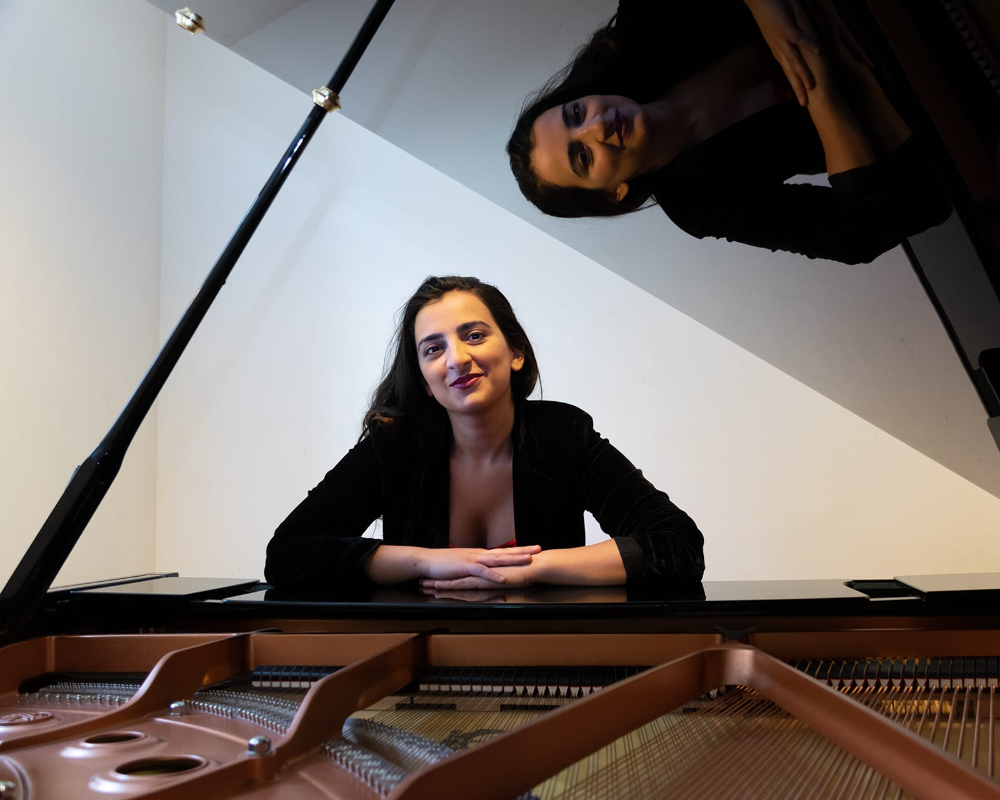
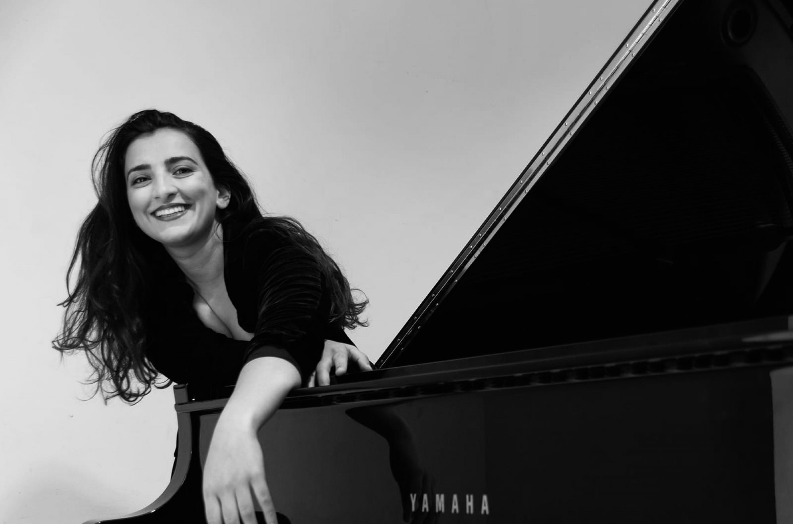
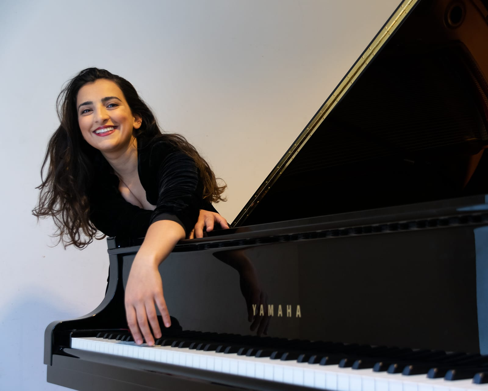

SERIOUS MUSIC · ZERO STUFFINESS
A piano studio for people who want music in their lives.
Our lessons motivate kids and adults to play with confidence, listen closely, make choices, and keep coming back to the piano because it feels good to make something.
You don’t have to be a prodigy.
You just have to be curious.
PIANO! LISTENING! CONFIDENCE! CREATIVITY! PIANO! LISTENING! CONFIDENCE! CREATIVITY!
WHAT WE DO AROUND HERE
Learn the basics.
Play what you love.
OUR BIG IDEA
Music isn’t another task on your list.
It’s something you get to keep.
FOR
LIFE!
LIFE!
THE STUDIO COMMUNITY
We practice alone.
We grow together.
Lessons are one-on-one, but music connects us. Studio gatherings, small performances, shared discoveries, and the occasional stubborn measure all become part of the story.

TINATIN GUDADZE
PIANIST · TEACHER · HUMAN
PIANIST · TEACHER · HUMAN
What do you really need to play piano?
1good ears+small steps+your own voice
If you’re wondering what that looks like, come sit at the piano.
FREE
TRIAL!
TRIAL!
CLEARWATER, FL · ONLINE TOO